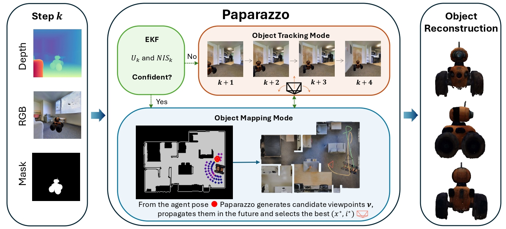

Current 3D mapping pipelines generally assume static environments, which limits their ability to accurately capture and reconstruct moving objects. To address this limitation, we introduce the novel task of active mapping of moving objects, in which a mapping agent must plan its trajectory while compensating for the object's motion. Our approach, Paparazzo, provides a learning-free solution that robustly predicts the target's trajectory and identifies the most informative viewpoints from which to observe it, to plan its own path. We also contribute a comprehensive benchmark designed for this new task. Through extensive experiments, we show that Paparazzo significantly improves 3D reconstruction completeness and accuracy compared to several strong baselines, marking an important step toward dynamic scene understanding.
Paparazzo is a learning-free framework for active 3D reconstruction of dynamic objects. Paparazzo considers a set of viewpoints distributed in a foveal configuration around the target object and moving with it over time. To select the most informative viewpoints, we rely on <>Fisher Information computed from a 3D Gaussian Splatting model, while, to predict the object trajectory and the future positions of these viewpoints, we leverage an Extended Kalman Filter.

We rely on an Extended Kalman Filter (EKF) defined on SE(3) to estimate the object state and its uncertainty. We assume a constant-velocity motion model, so the object state is composed of the object pose and its linear and angular velocities. We quantify our confidence about the object state with two complementary metrics. The first metric U_k = \mathrm{tr}(P_k)$ directly measures the state uncertainty; the second metric is the Normalized Innovation Squared (NIS), which quantifies the consistency of a new measurement of the target object pose with the current state estimate.
The goal of this mode is to prioritize frequent observations of the target object to refine motion estimates: the agent actively keeps the object within the camera’s field of view, while continuously reconstructing it and updating its motion estimate. At each time step, the agent rotates to move the segmentation mask toward the image center, and translates to adjust its distance to the object so that the object's apparent size remains approximately half of the image.
The goal of this mode is to move the agent to poses that will significantly improve its reconstruction of the object, while taking into account the object motion as predicted by the EKF.
To evaluate our Paparazzo method, we introduce a dedicated benchmark and evaluation protocol designed to assess both reconstruction fidelity and spatial coverage over time. Experiments are conducted within Habitat 3.0, a high-performance 3D simulator that provides realistic indoor environments and robot displacements. We selected six photorealistic indoor scenes, three from the Matterport3D dataset (M) and three from the Gibson dataset (G), commonly used for static active mapping. To extend these static scenes to dynamic scenarios, we introduce a synthetic moving target object into each environment.


Available soon.